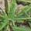
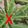
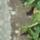

Your task is to tell if there is a banana tree center on the 40 by 40 pixels picture or not.
If there is a center like on the following template 
please just click on the tree center on the 40 by 40 pixels image you think like following  and then click on confirm.
If there is no center like on the following template 
please just click on confirm. If you want to remove your selection you can click the reset button.
If you find more than one center on picture, don't worry. Just click on the one you prefer.
The program doesn't end on a certain number of pictures. Please do it as many as possible.
Please click on the link start to annotate pictures.
I recommend to use this platform with Google Chrome.
Please don't use this on smartphones.
Thank you for your help.
Contact: Herval Bernice Nganya Nana